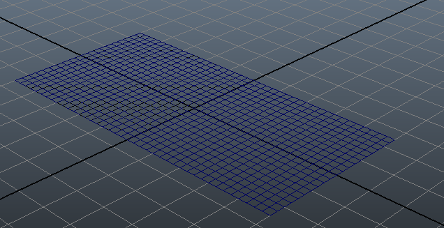
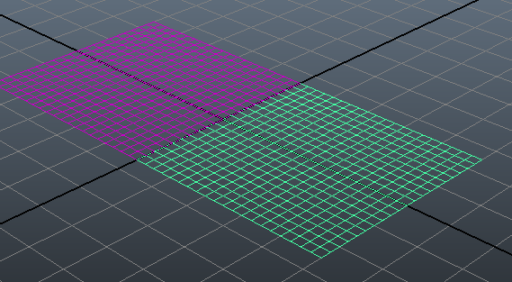
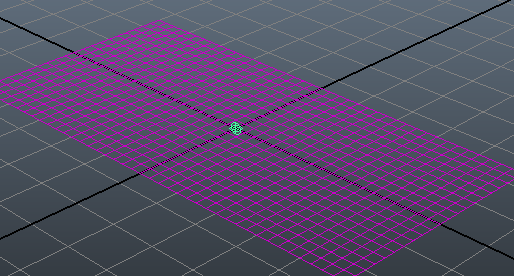
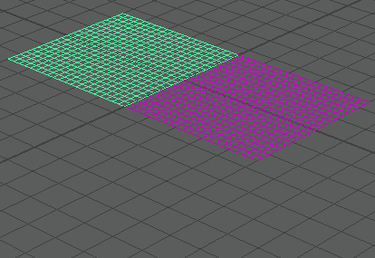
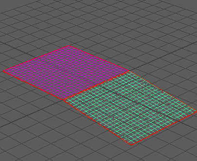

在新的 Maya 场景中，将“时间滑块”(Time Slider)持续时间设置为 1000 帧，并确保将其设为在第 1 帧播放。
- 通过依次选择“创建 > 多边形基本体 > 平面”(Create > Polygon Primitives > Plane)来创建两个多边形网格。在创建每个平面时，将其宽度和高度都设为 5。
- 平移网格以使其沿 Z 轴相接。完成此操作的一个方法是将一个网格的“平移 X”(Translate X)值设定为 2.5，并将另一网格的 “平移 X”(Translate X)值设定为 -2.5。

- 选择一个网格，然后依次选择“Bullet > 创建被动刚体”(Bullet > Create Passive Rigid Body)以将其转化为被动刚体。将此称为刚体 A。
- 选择另一个网格，然后依次选择“Bullet > 创建主动刚体”(Bullet > Create Active Rigid Body)以将其转化为主动刚体。将此称为刚体 B。

- 选择这两个网格，然后依次选择“Bullet > 创建刚体约束”(Bullet > Create Rigid Body Constraint)以创建这两者间的约束。

- 在“大纲视图”(Outliner)（“窗口 > 大纲视图”(Window > Outliner)）中，选择“bulletRigidBodyConstraint”节点。
- 在“属性编辑器”(Attribute Editor)中，单击“bulletRigidBodyConstraintShape”节点选项卡。
- 从“约束类型”(Constraint Type)列表中选择“铰链”(Hinge)。这将沿每个对象的 Z 轴创建一个刚体 A 和刚体 B 之间的“铰链”(Hinge)约束。
- 选择刚体 B。
- 在“属性编辑器”(Attribute Editor)中，单击“bulletRigidBodyShape”节点选项卡。
- 在“刚体特性”(Rigid Body Properties)部分中，将“角度阻尼”(Angular Damping)设为 0.4。
播放模拟。刚体 B 沿其 Z 轴来回摆动。随着时间的推移，刚体摆动减缓，直到在大约 1000 帧时停止。

- 若要查看在约束上启用马达的效果，请在“大纲视图”(Outliner)中选择“bulletRigidBodyConstraint”节点。
- 在“马达”(Motors)部分的“属性编辑器”(Attribute Editor)中，启用“已启用角度马达”(Angular Motor Enabled)。
播放模拟。在角度马达的作用下，此时刚体 B 在固定的速度下 360 度旋转摆动。
